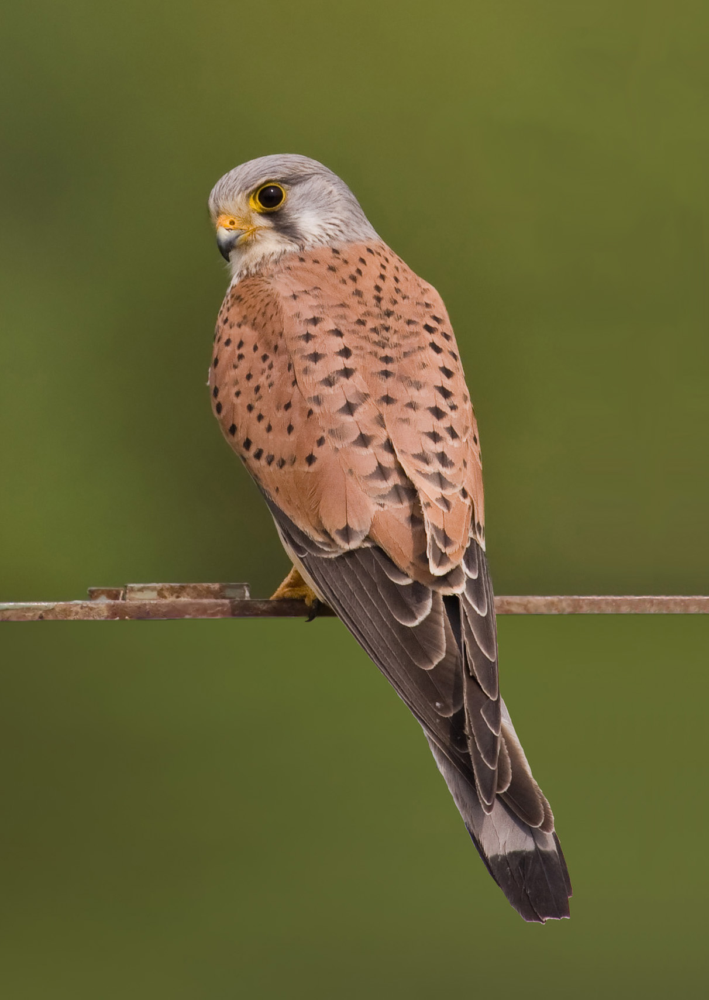

الباشقCommon Kestrel
Falco tinnunculus
مستوطن ومهاجرResident & Migratory
يُعرف الباشق علميًا باسم Falco tinnunculus، وينتمي إلى فصيلة الصقريات (Falconidae) ضمن رتبة الصقرياويات (Falconiformes)، وهو من أكثر الصقور الصغيرة شيوعًا، ويتميز الذكر برأس ومؤخرة رمادية وظهر بني محمر مرقّط بنقاط سوداء، بينما تميل الأنثى للون بني مرقّط بالكامل، ويشتهر بقدرته المميزة على التحليق الثابت في الهواء (الرفرفة المعلقة) أثناء مسح الأرض بحثًا عن فرائسه. هذا الطائر مستوطن ومهاجر في آن (R/M) في العراق، إذ توجد مجموعات مقيمة تتكاثر في مختلف أنحائه، بينما تفد إليه أعداد إضافية مهاجرة شتاءً.
The Common Kestrel is scientifically known as Falco tinnunculus, belonging to the falcon family (Falconidae) within the order Falconiformes. It is among the most common small falcons; the male is distinguished by a gray head and rump and a reddish-brown back spotted with black marks, while the female tends toward entirely mottled brown, known for its distinctive ability to hover in place while scanning the ground for prey. This bird is both resident and migratory (R/M) in Iraq, with resident populations breeding throughout the country, while additional numbers arrive in winter.
يصنَّف الباشق ضمن الأنواع غير المهددة (Least Concern) وفق الاتحاد الدولي لحفظ الطبيعة، بفضل انتشاره الواسع جدًا وتكيفه العالي حتى مع البيئات الحضرية. ويسهم الباشق في النظام البيئي العراقي عبر افتراسه الفعال للقوارض الصغيرة والحشرات الكبيرة والسحالي، ما يجعله من أهم الجوارح الصغيرة المنظمة لأعداد القوارض في الأراضي الزراعية والمناطق شبه الحضرية، ويُعد وجوده المستقر على مدار العام مؤشرًا على مرونته البيئية العالية في مختلف موائل العراق.
The Common Kestrel is classified as Least Concern by the IUCN, thanks to its very wide distribution and high adaptability, even to urban environments. It contributes to Iraq's ecosystem through its effective predation of small rodents, large insects, and lizards, making it one of the most important small raptors regulating rodent populations in agricultural land and semi-urban areas, and its stable year-round presence indicates its high ecological flexibility across Iraq's diverse habitats.